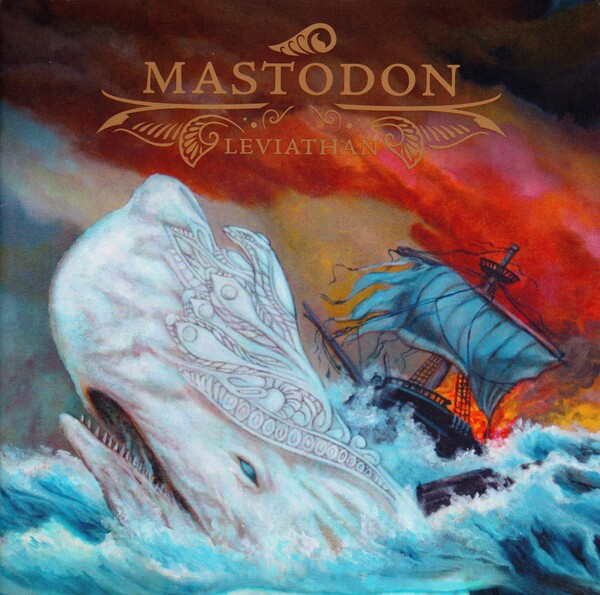
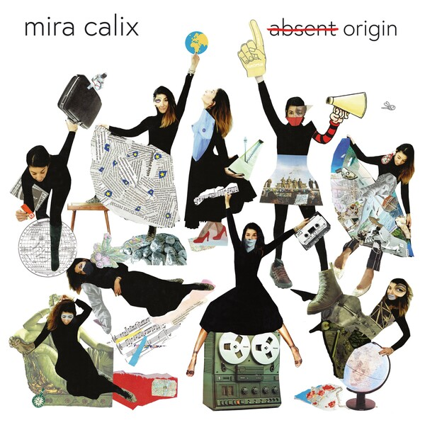
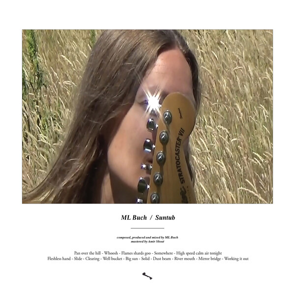
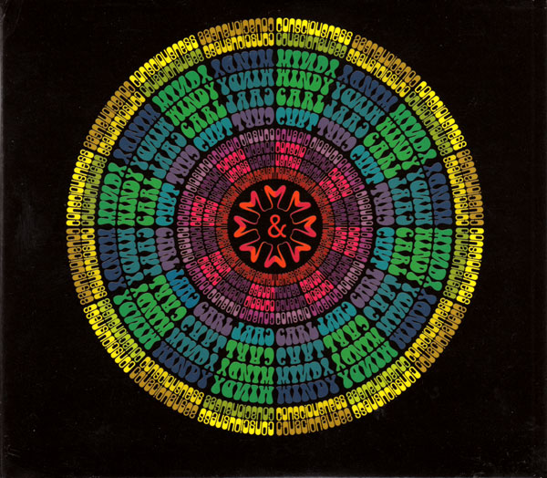
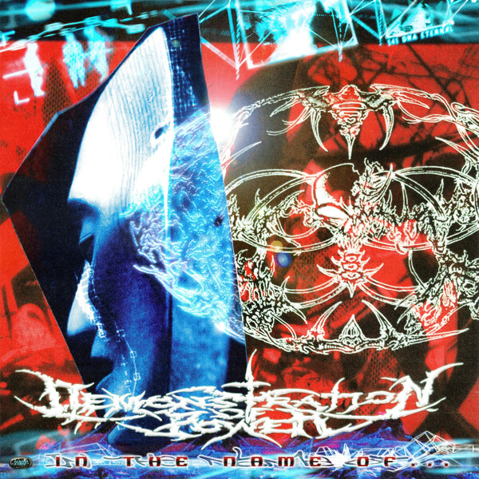
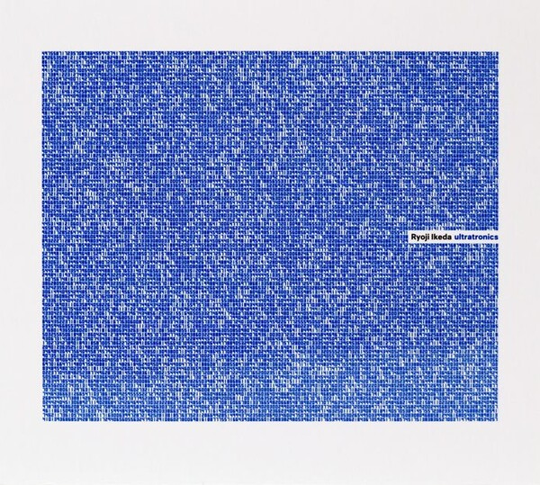
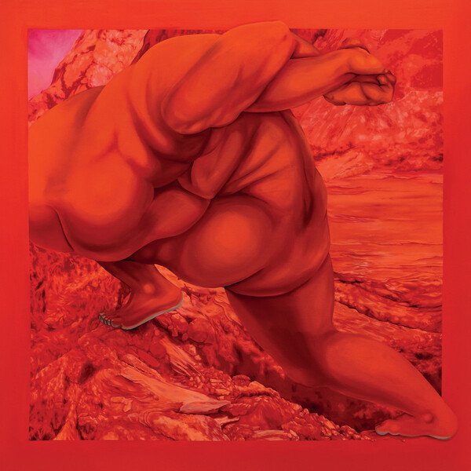
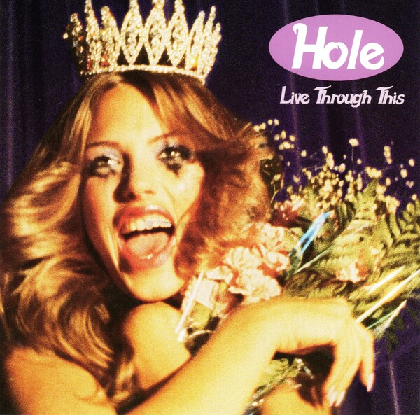
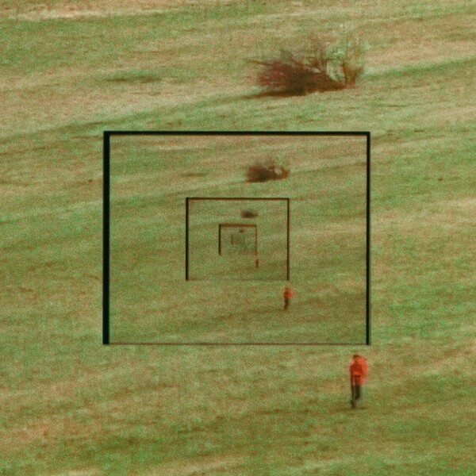
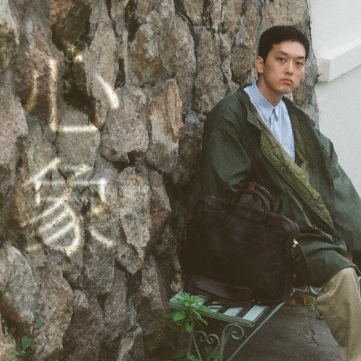

Mastadon - Leviathon (2004): Moby Dick concept album soundtracked by chugging riffs and epic vocals.
Rooster - Rooster Slipped (2025): emo rap premium subscription.

Mira Calix - a̶b̶s̶e̶n̶t̶ origin (2021): Maximalist sampling heaven.
ML Buch - Suntub (2023):
Windy & Carl - Consciousness (2001): Zen.
Demonstration of Power - In the Name of... (2026): Glasgow Hardcore keeping it real as always. DJ Sniff - Turntable Solos (2025): Frentic, excited to see this guy live tomorrow.
DJ Sniff - Turntable Solos (2025): Frentic, excited to see this guy live tomorrow.
 Guitar - Sunkissed (2002): Shoegaze with heavy trip hop beats, the title track is this sound at it's best.
Guitar - Sunkissed (2002): Shoegaze with heavy trip hop beats, the title track is this sound at it's best.
 Fine - Jazz dreams (2026): Somewhere between Portishead and Dean Blunt, glued together by excellent songwriting sensibilities.
Fine - Jazz dreams (2026): Somewhere between Portishead and Dean Blunt, glued together by excellent songwriting sensibilities.
 Eiko Ishibashi(石橋英子) - Car and Freezer (2014): I like the 80s sophistipop style with live instrumentation, didn't really stick with me sadly.
Eiko Ishibashi(石橋英子) - Car and Freezer (2014): I like the 80s sophistipop style with live instrumentation, didn't really stick with me sadly.
 Coil - Black Antlers - (2004): "Sex with Sun Ra" is phenomenal (quote that out of context please).
Coil - Black Antlers - (2004): "Sex with Sun Ra" is phenomenal (quote that out of context please).

Ryoji Ikeda - Ultratronics (2022): Technically selling out, I guess? Love how Ryoji recontextualises his trademark micromontage into other genres.
Marina Herlop - Dja Dja (2026): IDM meets choral meets folk, one of the most creative albums I've heard in a while.
Hole - Live Through This (1994): I respect it but it sort of sounds like the same song 12 times over.
Bibio and Dorian Concept - Answers (2026): Pastoral progressive electronic that evokes a Sunday morning continental breakfast.
心象 - Sawteeth (2026): 90s vibe heavy jungle, doesn't reinvent the wheel, but it's effortlessly cool.